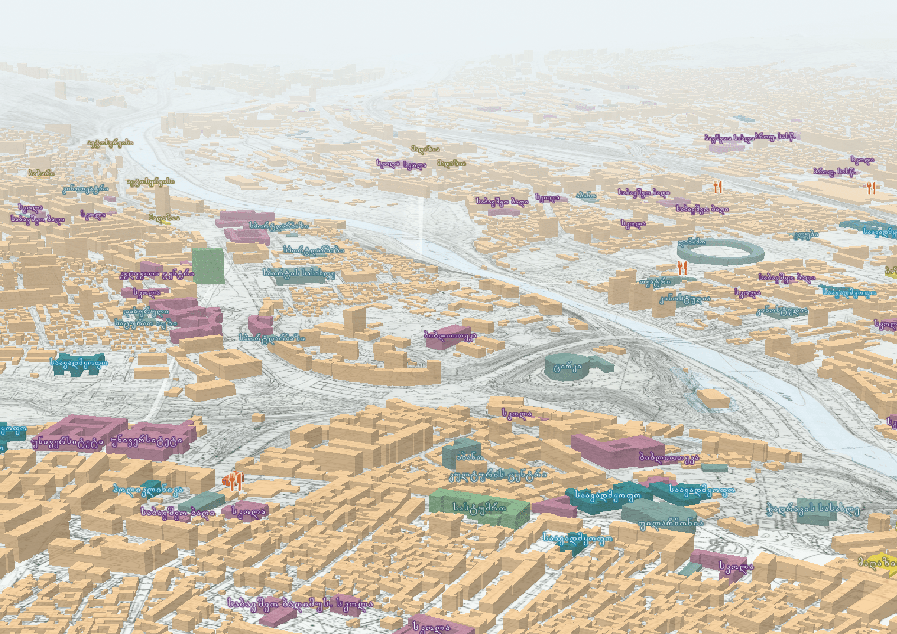

Tbilisi Evolution from the 80s
See the full project here
In collaboration with Tbilisi as an Urban Assemblage project.
I am Giorgi Kankia, an urban geogrpaher and planner with a special passion for cartography and spatial analysis. Here is a selection of maps and other data visualisation materials I have worked on both, in personal and professional capacity. To learn more about my work aside from mapping, you can check my website or have a look at our organisation's work at Z.axis. For professional enquiries, reach out at me@gkankia.xyz

Retro-style plan oblique

The panorama of the Enguri river gorge in Svaneti, Georgia.

A rather new perspective of looking at Georgia's demographics, with Russian-occupied Tskhinvali included.
See the full project here
RFE/RL Tbilisi office did a documentary on this.

This 3D diorama will be featured in a children's book DIVING FOR DEEP SEA DRAGONS by Karen Romano Young sometime in 2024.

Topography is not a big issue for cycling in Tbilisi. Euronews Georgia reported on this.

Not 1 000 000! That's for sure!

See the full project here
In collaboration with BAU DESIGN through an ADB-funded project.
The uneven spatial distribution of private swimming pools in Tbilisi.
The interactive visual below tracks the nitrate pollution in the Black Sea from March, 2019 up until April, 2022. Higher levels of nitrate pollution poses a threat to marine life and the biodiversity.

This map is a result of trial and error loop while getting my hands on Blender.

It is striking to see how these adjacent, historic neighbourhoods in Tbilisi have two completely different urban layout.
See the full project here

This map highlights the arrests, or rather kidnappings of local residents from their own land plots along the Tskhinvali region administrative boundary line by Russian occupation forces and South Ossetia's KGB guards.
Regardless of how faulty the whole Soviet system might have been, their approach to urban transit planning did make a lot of sense.

Shaded relief map of Mount Ağrı [Arm. Ararat], located in the Eastern part of the country, bordering Armenia.

In addition to the spatial distribution of wildfires, industrial areas are also detected as emitting most of the smokes into the atmosphere.

A rather abstract visual of a portion of Egrisi mountain range in North-Western Georgia.
See the full project here

This lego-style map shows how fast the fixed broadband internet connection is across Tbilisi.

The spatial distribution of demographics.